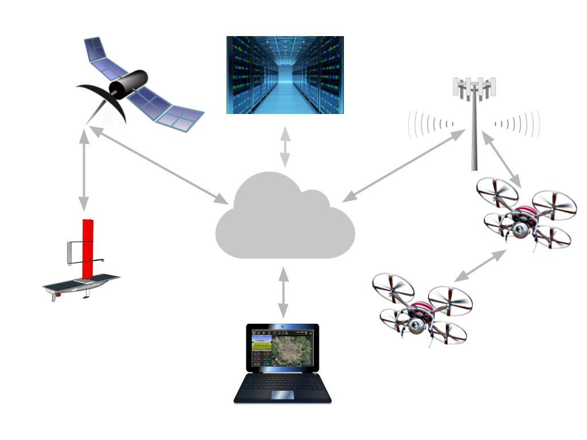

SPL is a global satellite telemetry system for autonomous vehicles controlled by ArduPilot or PX4 autopilots.
With SPL you can track, command, and control your solar powered boats, planes, blimps, and other autonomous vehicle from the other side of the Earth using Mission Planner or QGroundControl ground control stations.
SPL supports wireless TCP/IP Internet connections and Iridium short burst data (ISBD) satellite communication technology provided by Rock Seven Mobile.
Not only does SPL transmit messages between autopilot and ground control stations, it also filters messages, buffers, and compresses data to adapt MAVLink protocol for high latency ISBD communication.
SPL also stores the transmitted messages in a persistent store and provides access to the stored data via web service.
See Envirover docs for the instructions on SPL installation and operation.